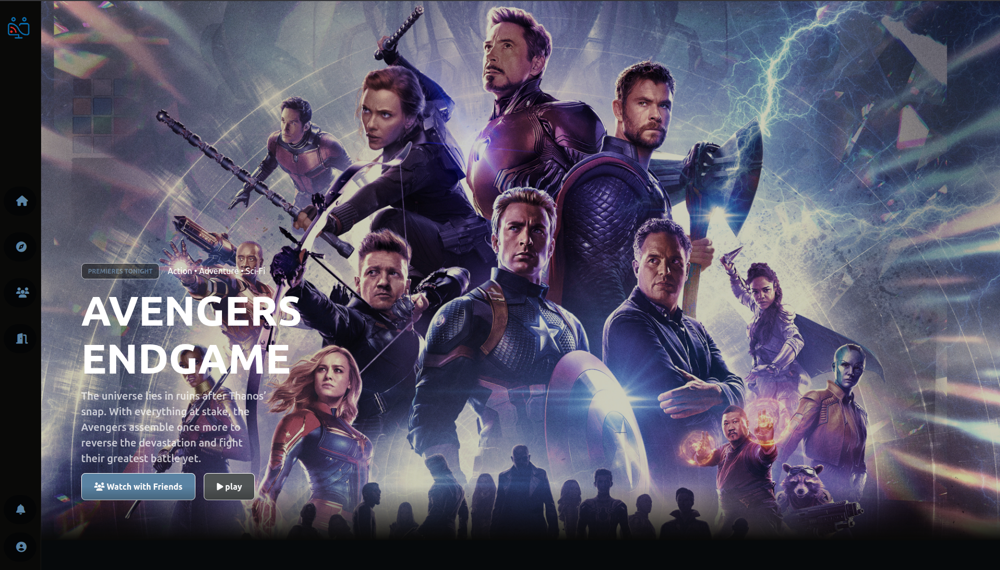

👋 Welcome to my portfolio
Hi, I'm Hari Vignesh
A creative developer passionate about building beautiful, functional, and user-friendly digital experiences.
scroll down
A creative developer passionate about building beautiful, functional, and user-friendly digital experiences.
scroll down
I'm a full-stack developer creating digital products that make a difference. I believe in writing clean, efficient code and designing intuitive user experiences.
When I'm not coding, you'll find me exploring new technologies, contributing to open-source projects, or enjoying a good cup of coffee.
Here are some of my recent works that showcase my skills and passion for development.

CineSync is a Collaborative Movie Watching Platform.